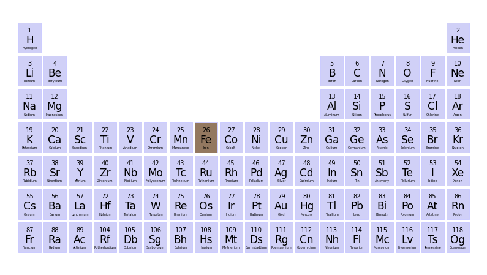
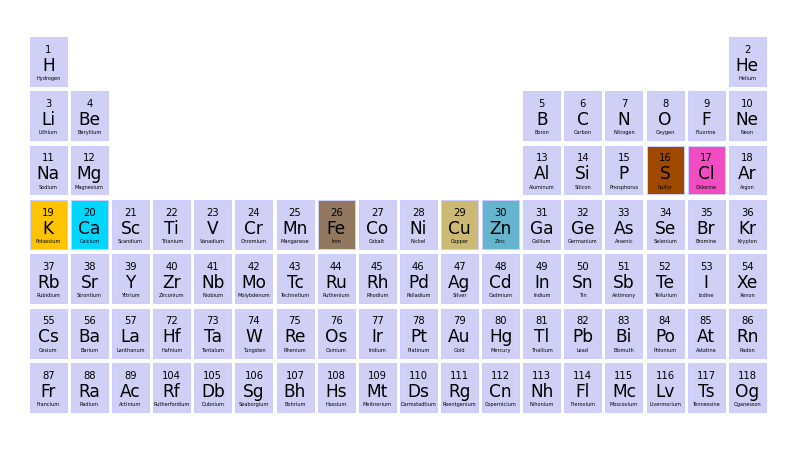
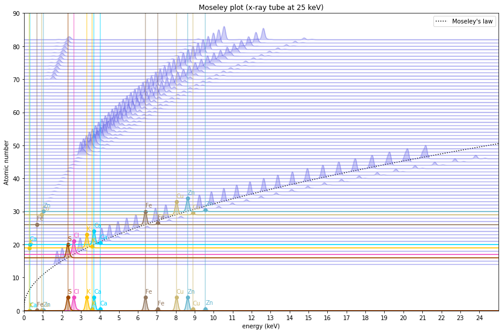

/home/runner/work/moseley/moseley/moseley/mplot.py:189: SyntaxWarning: "is" with a literal. Did you mean "=="?
if weight_list is 'equal':Moseley’s law
From peak energies to the Periodic Table
An x-ray fluorescence spectrum for a specific pure element contains a characteristic combination of peaks of different heights at different energies. It follows that for a material that contains a mixture of different elements a spectrum with a complex pattern of peaks will arise. Inferring a material composition from a measured XRF spectrum amounts to attributing peaks to elements.

Henry Moseley (image: wikipedia)
In 1913-1914 the young British physicist Henry Moseley discovered a beautiful simple regular pattern that relates the energy of the (typically) strongest peak in a pure element spectrum (called the \(K_{\alpha}\) line) to the atomic number (\(Z\)).
\[ E_{K_{\alpha}} = 10.2 \left( Z - 1 \right)^2 \]
Where the energy is expressed in units of electron volt \([eV]\). Suppose now that you observe a large peak in a spectrum at a given energy but it is unknown which element generated. It is useful now to invert this expression to calculate the atomic number of the prime suspect chemical element that possibly emitted the peak.
\[ Z = \sqrt{\frac{E_{K_{\alpha}}}{10.2}} + 1 \]
Note that that we have simple a square root function here. As a practical numerical example, suppose now we measure an XRF spectrum for a sample of a pure (for the sake of this exercise) unknown element (See figure x). The largest peak in this spectrum has an energy of 6.40 keV = 6400 eV. Rounding off one can calculate
\[ Z = \sqrt{\frac{6400}{10.2}} + 1 = 26.05 \approx 26 \rightarrow \rm{Fe} \]
In the periodic table it is found that this atomic number corresponds to iron (Fe), which indeed is the element used for the measurement.
mos.ptable_plot(['Fe'])
Creating the Moseley plot
In order to develop a further intuition of XRF physics beyond Moseley’s law, it is instructive to create a plot with simulations of theoretical pure element XRF spectra for the complete periodic system.
I am not an expert in XRF physics. And therefore I am not able to calculate or look up the complex spectral patterns by myself. However, thanks to the open source scientific community advanced python packages are readily available from the python package index to simulate spectra. An authoritative resource for simulating XRF physics is fisx, the periodic table can be consulted using mendeleev, plotting and peak finding can be done with scipy and matplotlib.
In order to create your own simulation plots, install the moseley package (see installation instructions above), and execute the following commands in a Jupyter notebook:
import moseley as mosmy_elements = ['Ca', 'Cl', 'S', 'Fe', 'Cu', 'K', 'Zn']mos.ptable_plot(my_elements)
You can now inspect the spectra for the selected elements and x-ray tube energy.
fig = mos.moseley_plot(tube_keV=25, elem_select=my_elements)
The spectra shown here are idealized simulations. There are several reasons why some peaks might not be visible, and additional false (sum and escape) peaks might show up. For now, this is outside the scope of this simulation.
API
moseley_plot
moseley_plot (tube_keV, elem_select=None, weight_list='equal', law=True, figname=None)
Generate Moseley plot of simulated xrf spectra for periodic table.
Args: elem_select (list of str): List of symbols of elements. All selected elements will be highlighted with bright colors and peak labels. tube_keV (float or list of floats): X-ray tube energy in keV. weight_list (list of floats): X-ray tube intensities. Optional, defaults to ‘equal’.
Example: moseley_plot(tube_keV=40, elem_select=[‘Fe’, ‘Ca’]);
Returns: matplotlib figure
moseley_law
moseley_law (E_K_alpha_keV)
Square root form of Moseley’s law.
Args: E_K_alfa_keV (float or array of floats): K_alpha peak energy in keV
Example: moseley_law(6.40)
Returns: Z (float or array of floats): predicted atomic number
XFluo
XFluo (element, tube_keV, weight_list='equal', std=0.01, min_prom=0.001)
Create an annotated x-ray fluorescence spectrum object.
Args: element (str): Chemical symbol e.g ‘Fe’ tube_keV (float or list of floats): X-ray tube energies in keV. For a poly chromatic X-ray tube multiple energies can be provided.
weight_list (list of numbers): X-ray energy weights. Corresponding to energy_list
std (number): Peak width used for plotting min_prom (number): Minimal peak prominance. Only peaks higher then prominance are labeled.
Example: xf = XFluo(‘Fe’, [20, 40])
Returns: XRF annotated spectrum object
ptable_plot
ptable_plot (elem_select=None, figname=None)
Create periodic table plot with selected elements colorized.
make_ptable
make_ptable ()
Make numpy array with element attributes for regular part of the periodic table.
The irregular Lanthanides and Actinides series are rare, so we do not plot them